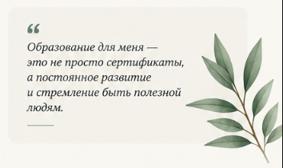
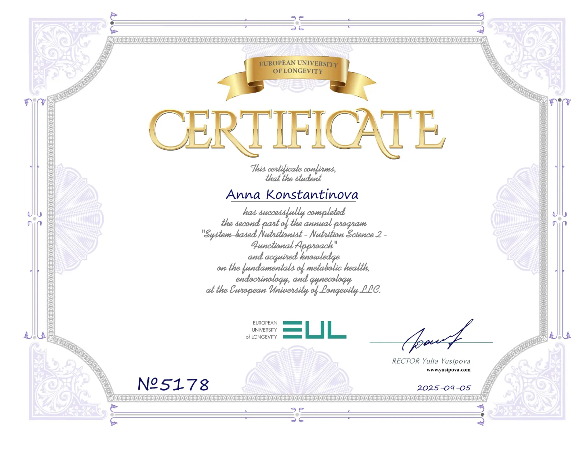
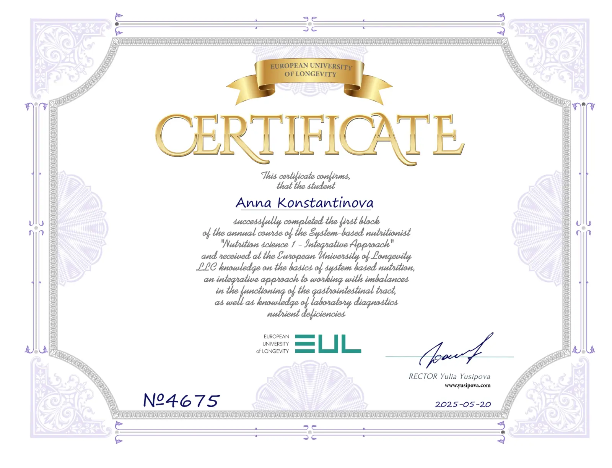
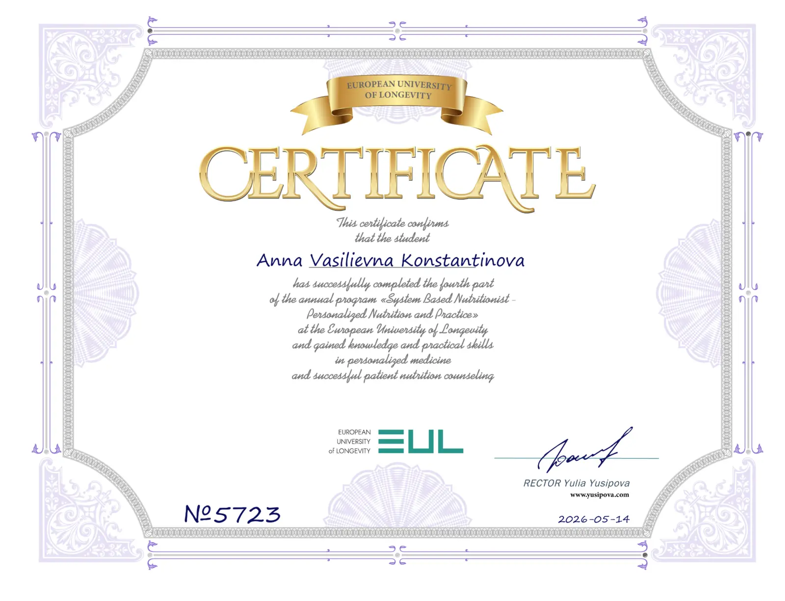
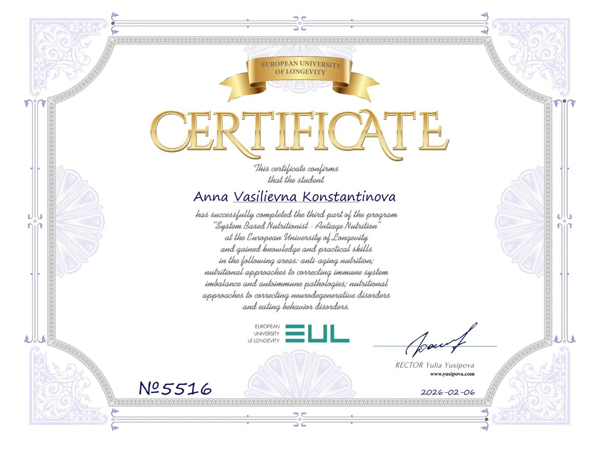
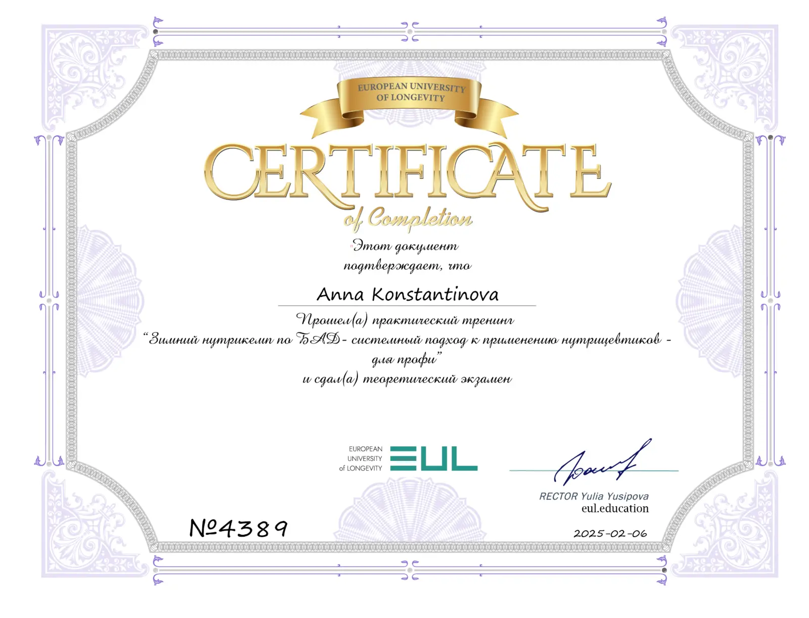

Интегративная нутрициология
Системный подход к питанию, работа с нарушениями функционирования желудочно-кишечного тракта, основы лабораторной диагностики и выявление дефицитов нутриентов.
Знания, которые помогают делать реальные изменения в жизни

Я прошла комплексную программу подготовки System-Based Nutritionist в European University of Longevity. Обучение построено на системном и интегративном подходе к питанию и здоровью человека — от понимания работы основных систем организма до персонализированной нутрициологической поддержки.
Полученные знания и практические навыки позволяют мне помогать людям восстанавливать баланс, повышать энергию, улучшать самочувствие и строить устойчивые, здоровые привычки, которые работают в реальной жизни.
Системный подход к питанию, работа с нарушениями функционирования желудочно-кишечного тракта, основы лабораторной диагностики и выявление дефицитов нутриентов.
Основы метаболического здоровья, эндокринология и гинекология и их взаимосвязь с питанием и образом жизни.
Нутрициологические подходы в области здорового долголетия, питание при возрастных изменениях, нарушениях иммунной системы, аутоиммунных состояниях, нейродегенеративных нарушениях и расстройствах пищевого поведения.
Практические навыки индивидуального консультирования и составления персонализированных рекомендаций по питанию.
Системный подход к применению нутрицевтиков и практическая работа с ними.
Ниже представлены мои дипломы и сертификаты, подтверждающие обучение в European University of Longevity.




